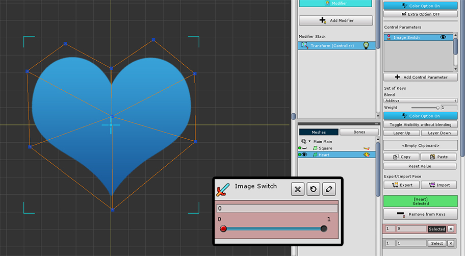

AnyPortrait > マニュアル > 半透明なくメッシュを表示/非表示
半透明なくメッシュを表示/非表示
1.2.3
「Color Option」が設定されたモディファイヤを使用すると、メッシュを見せたり非表示にできます。
この機能を利用して、二つ以上のメッシュが転換される効果を作成することが可能です。
そして時にはメッシュが切り替わるとき、「半透明される段階」があってはならする必要があります。


「Image Switch」という名前の「制御パラメータ」に、2つのメッシュが互いに転換されるサンプルを作ってみました。
制御パラメータの値が0のときは、「青のハート」が表示され、1のときは、「緑の長方形」が表示されます。
「Transform（Controller）」モディファイヤを使用し、 「Color Option」がオンになっていることを見ることができます。

制御パラメータが0から1に移動すると、上記のように「青のハート」から「緑の長方形」に徐々に変化を見ることができます。
スムースなアニメーションのために半透明のステップが存在するシステムによる結果です。
概して、これらの変換プロセスは、適切であるが、場合によっては、このプロセスが不要なことがあります。

制御パラメータを選択した状態では、「Color Option」ボタンの下にある「Toggle Visibility without blending」ボタンを押します。
この機能をオンにするメッシュが表示されて隠される過程が不連続に変化します。

今制御パラメータが0から1に変わるとき、中間値である0.5を基準に、「緑の長方形」が表示され、「青のハート」は非表示になります。
半透明なく現われるので、メッシュを切り替えたときに、この機能は非常に便利になります。